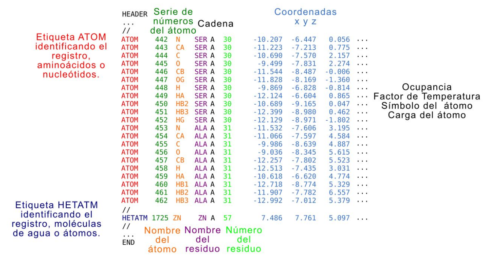
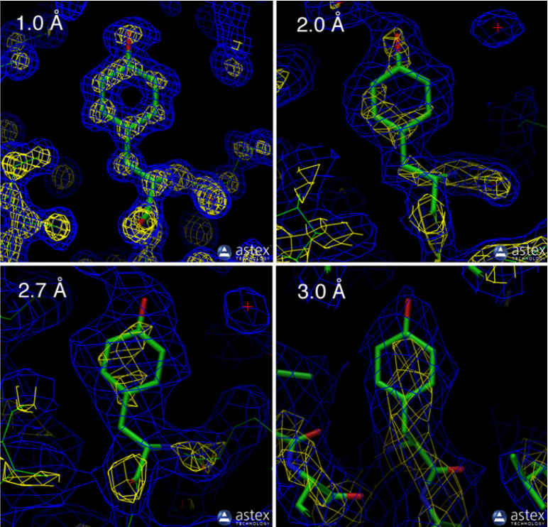

TP 2. Chimera
Recursos Online
- PDB: https://www.rcsb.com
Objetivos
- Familiarizarse con el uso de la base de datos de estructuras de proteínas
- Aprender a visualizar estructuras 3D de proteínas o complejos proteicos, incluyendo diferentes niveles de análisis
- Identificar diferentes tipos de unión molecular tales como puentes de hidrógeno o interacciones mediadas por carga y entender el rol de los mismos.
- Identificar interacciones hidrofóbicas y entender el rol de las mismas.
- Aprender a superponer estructuras relacionadas y analizar los resultados.
Bases de Datos Estructurales.
¿Dónde se almacenan todas las estructuras? ¿Cómo accedemos a ellas?
La base de datos de proteínas (Protein Data Bank, PDB) almacena actualmente más de 150000 estructuras. Puedes acceder a ella aquí: http://www.rcsb.org/. Existe también una versión europea de esta base de datos (European Protein Data Bank, PDBe). Puedes acceder a ella desde aquí: https://www.ebi.ac.uk/pdbe/.
Las estructuras poseen un identificador de 4 caracteres alfanuméricos. Por ejemplo: 1GUX es el identificador, o PDB ID, de la proteína retinoblastoma unida a un péptido de la proteína E7 de Papillomavirus.
La búsqueda de estructuras puede realizarse utilizando palabras claves, por ejemplo, la palabra clave retinoblastoma devuelve un total de 236 estructuras, o por otras características como nombre de alguno de los autores que participó en el estudio de esa estructura, por ejemplo, “Rubin, S.M.” devuelve un total de 41 estructuras. Pueden explorar la base de datos RCSB PDB para familiarizarse con ella.
El repositorio PDB es mantenido por tres sitios independientes:
Si bien los datos principales y recursos son compartidos, cada sitio provee un conjunto exclusivo de servicios para que los usuarios puedan inspeccionar los datos.
El archivo PDB. ¿Cómo están codificadas las estructuras?
Las estructuras tridimensionales de las proteínas pueden generarse por diferentes métodos (cristalografía de rayos X o X-Ray, resonancia magnética nuclear o RMN, criomicroscopía electrónica o CryoEM) y están codificadas en archivos pdb. Un archivo pdb está compuesto por múltiples líneas de registros, cada uno identificado por una etiqueta determinada incluidos dentro de distintas secciones. En la Figura 1 se muestra un fragmento de la sección de coordenadas que describe la estructura de la proteína dando las coordenadas “x”, “y” y “z” (azul claro) de cada uno de los átomos identificados.

<
{kind=link}
En cada línea, además, se identifica si es un átomo (rojo) perteneciente a un aminoácido o nucleótido, o heteroátomo (azul oscuro), la numeración (verde oscuro), el nombre del átomo (naranja), el nombre del residuo en el que está incluido el átomo (violeta), la cadena a la que pertenece (negro), el número del residuo al que pertenece (verde claro). Este archivo puede incluir más columnas para cada átomo con datos relacionados con la movilidad del átomo (el factor de temperatura o B-factor), el sı́mbolo que representa al átomo y la carga del mismo (señaladas con “...” en la figura). El encabezado o header del archivo PDB puede tener muchísima información no relacionada directamente con la conformación tridimensional de la proteína, sino con cómo se hizo el experimento, las publicaciones relacionadas y otros. La descripción del resto del contenido de las secciones del archivo pdb puede obtenerse en la sección documentación de http://www.wwpdb.org/. Recientemente, se desarrolló un nuevo formato de archivo, MMCIF, que puede codificar estructuras de complejos macromoleculares mucho más grandes. Sin embargo, no todos los programas utilizados para visualizar estructuras soportan este formato.
¿Qué significa la resolución de una estructura?
Otra característica de las estructuras es la resolución con la cuál se obtuvieron. Hay una muy buena explicación en pdb-101 que traigo aquí.
La resolución es una medida de la calidad de los datos que se recolectaron del cristal. Si el cristal es perfecto, es decir que todas las proteínas están estructuralmente alineadas de manera idéntica, entonces el patrón de difracción generado mostrará detalles muy finos. Por otro lado, si las proteínas en el cristal no alinean estructuralmente debido a movimientos o flexibilidad local, el patrón de difracción no brindará mucha información. Estructuras de alta resolución, con valores de 1 Å o similar, están altamente ordenadas y es fácil ver cada átomo en un mapa de densidad electrónica. Estructuras de baja resolución, con valores de 3 Å o mayores, muestran los contornos de la cadena proteica y la estructura atómica debe inferirse. En general, la localización de los átomos en estructuras que tienen un valor de resolución pequeño es de mayor confianza.

<
{kind=link}
En la Figura 2 se muestra el mapa de densidad electrónica de distintas estructuras (las regiones de alta densidad electrónica se muestran en azul y amarillo) dentro de un rango de resoluciones.
Las tres primeras muestran la tirosina 103 de la mioglobina (con palitos verdes se muestra el modelo atómico), los pdbs correspondientes son 1a6m (resolución de 1.0 Å), 106m (resolución de 2.0 Å) y 108m (resolución de 2.7 Å). El último ejemplo muestra la tirosina 130 de la cadena B de la hemoglobina del pdb 1s0h (resolución de 3.0 Å).
En la estructura de resolución de 1.0 Å se pueden ver la alta densidad electrónica en cada uno de los carbonos del anillo de la tirosina. A medida que aumenta ese valor, la densidad electrónica se va reduciendo (disminuye el contorno amarillo). Si bien los archivos PDB pueden inspeccionarse con un editor de texto cualquiera (para revisar el encabezado por ejemplo), normalmente es mejor utilizar un programa de visualización particular que mostrará la estructura en un sistema virtual de coordenadas tridimensionales. De esta manera, el usuario podrá hacer zoom, rotar y trasladar la estructura. Cambiar la representación, mostrar las uniones y calcular las distancias, encontrar características estructurales de interés, etc. Estas herramientas pueden accederse online y están disponibles en los sitios de PDB, pero existen programas más poderosos y versátiles que se pueden descargar (como UCSF Chimera o Pymol).
Los archivos PDB normalmente tienen un modelo para cada molécula. Sin embargo, una entrada PDB puede tener uno o múltiples modelos de la misma molécula. Por ejemplo, debido a características de la técnica, las estructuras resueltas por NMR usualmente tienen 20 modelos alternativos en el mismo archivo.
Muchas entradas PDB poseen missing residues. Estas son porciones que no fueron observadas durante la determinación experimental de la estructura posiblemente debido a un aumento en la flexibilidad de esa región. La amplitud de estas regiones puede variar desde pequeños loops dentro de dominios globulares hasta largos segmentos desordenados.
La secuencia de la proteína en un PDB no necesariamente se corresponde al 100% con la de la entrada UniProt, debido a decisiones del experimentalista o dificultades técnicas. Siempre hay que revisar.
PDB - Ejercicios
Ejercicio 1. Familiarizándonos con el PDB.
La proteína oxy-mioglobina de organismo Physeter catodon posee una estructura cuyo PDB ID es 1A6M.
- Busque la estructura en el PDB (Si quiere aunque no es necesario, puede descargar el archivo PDB utilizando los botones en la parte superior derecha Download Files).
- Inspecciona la sección Structure Summary.
- ¿Cuándo se publicó la estructura en la PDB?
- ¿Es una estructura de buena calidad?
- En la sección Macromolecules, encontrará la mención a la proteína Mioglobina.
- ¿Cuántas cadenas tiene?
- ¿Puede identificar su UniProt accession?
- En la sección Protein Feature View hay un mapeo sitio-específico entre UniProt y el PDB, con algunos adicionales de otras bases de datos. Si hace click en expand, podrá acceder a toda la información.
- ¿Qué tipo de estructura secundaria adopta esta proteína?
- ¿Puede encontrar los sitios de unión del hierro?
- ¿Qué aminoácidos están involucrados?
- Vuelva a la pestaña Structure Summary
- ¿Esta estructura tiene unida una molécula de oxígeno?
- En la sección Macromolecules, en la subsección Entity groups encuentre cuantas cadenas de otras entradas en el PDB son 100% idénticas a esta proteína.
- Inspeccione la pestaña Experiment y responda:
- ¿A qué pH fueron realizados los experimentos de cristalización?
Visualización de estructuras proteicas con Chimera
Para poder visualizar estructuras macromoleculares tales como proteínas globulares y ácidos nucleicos, se usará el software UCSF Chimera. Existen otros softwares similares pero Chimera tiene la ventaja de ser mantenido actualmente por sus desarrolladores. Chimera es un programa disponible de manera gratuita, y está disponible para descargar e instalar en tu propia computadora en https://www.cgl.ucsf.edu/chimera/download.html.
Existen un alto número de guías y tutoriales disponibles online que pueden encontrarse en: https://www.cgl.ucsf.edu/chimera/current/docs/UsersGuide/.
Para pensar...
Antes de empezar, pueden responder:
- ¿Por qué es importante visualizar estructuras proteicas?
- ¿Qué información podríamos obtener de ellas?
- ¿Estas estructuras, son un objeto real o un modelo?
Chimera - Ejercicios
Ejercicio 1. Familiarizándonos con Chimera
Chimera es un programa con muchas potencialidades y herramientas de análisis. En la siguiente guía, introduciremos el uso de las funciones más comunes de este programa, en relación al análisis estructura-función de proteínas.
Manos a la obra!
-
Localice chimera en su computadora y ábralo. En la parte superior se encuentra el Menú. Vaya a Favorites y elija Command Line. Aparecerá en la parte inferior la Línea de comandos.
-
Vaya nuevamente a Favorites y elija Reply Log, se abrirá una ventana. En el Reply Log aparecerán información, resultados numéricos y errores que nos devuelve Chimera.
-
Vaya nuevamente a Favorites y elija Model Panel, se abrirá una ventana. En Model Panel van a ir apareciendo las estructuras que estén abiertas en nuestra sesión.
Para cargar una estructura en Chimera escribe en la línea de comandos:
open 2aze
Si ya hay una estructura ya descargada en la computadora se puede abrir usando:
open path/to/file/fileName.extension
IMPORTANTE
Si en el nombre del archivo o directorio existen espacios debes incluir el nombre completo entre comillas:
path/to/file/file Name.extension
El log y el panel de modelos se actualizan y aparecerá información asociada a la estructura cargada.
- Mira el log y responde:
- ¿Qué proteínas están incluidas en este pdb?
- ¿Qué aparece en el panel de modelos?
Antes de seguir… Familiarizate con el uso del mouse:
- El botón izquierdo del mouse permite rotar la estructura.
- El botón derecho del mouse permite trasladar la estructura.
- La rueda del mouse permite ampliar o reducir la imagen (hacer zoom).
Ejercicio 2. Conociendo la nomenclatura en Chimera
Esta es una de las partes más importantes para tener bien en claro ya que nos permitirá hacer todas las selecciones para analizar la estructura.
-
Definiendo modelos.
Cada estructura que abrimos en Chimera se carga como un modelo. Los modelos se nombran con el símbolo
#seguido de un número.Prueba seleccionar el modelo entero escribiendo en la línea de comandos:
select #0Para borrar la selección escribe:
~selectInfo
La mayoría de los comandos permiten utilizar el símbolo de negación “~” por delante para ocultar lo que se hizo.
-
Definiendo cadenas:
Para indicar una cadena del modelo se utiliza el símbolo
.seguido de la letra correspondiente.Prueba seleccionar la cadena A del modelo escribiendo en la línea de comandos:
select #0:.AOtra forma de hacerlo, es:
select :.ASi hubiera más de un modelo, ese comando seleccionaría TODAS las cadenas nombradas A.
Si se desea, se puede seleccionar más de una cadena separando por comas cada una de ellas o un rango de cadenas separando los identificadores por guiones.
select #0:.A,.B select #0:.A-C -
Definiendo residuos:
Para indicar residuos se utiliza el símbolo
:seguido del número de residuo correspondiente. Prueba seleccionar el residuo 300select :300- ¿Cuántos residuos se seleccionaron?
Para seleccionar uno de los dos residuos utiliza el siguiente comando:
select :300.AEn base a lo que aprendimos hasta ahora:
- ¿Cómo sería el comando para seleccionar un rango de residuos?
- ¿y para seleccionar residuos separados?.
También es posible indicar los residuos por el código de tres letras de los aminoácidos (Si no lo recordás podés encontrarlo acá).
Prueba seleccionar por ejemplo todos los ácidos glutámicos.
select #0:glu.A -
Definiendo átomos:
Para indicar átomos se utiliza el símbolo
@seguido del nombre del átomo correspondiente dentro de la proteína. Prueba seleccionar los CA (carbonos alfa).select #0:.A@CA- ¿Puedes entender lo que se seleccionó?
Para ver más claro lo que estamos seleccionando, mostraremos las cadenas laterales de los residuos. Ingresa el siguiente comando y luego selecciona los carbonos beta y colorealos de verde.
display #0:.A select #0:.A@CB color green,a selHay dos cosas que cambiamos:
sel: permite aplicar el comandocolorsobre lo que está seleccionado.a: específica que sólo se coloreen los átomos. Prueba qué ocurre si no incluís a.
-
Definiendo palabras claves:
Existen numerosas palabras clave que permiten seleccionar grupos de cosas predefinidas, además de las que presentamos a continuación puedes encontrar más información.
En relación a: Palabra Clave Ejemplo Estructura Secundaria helixstrandcoilselect #0:.C & helix
select #0:.C & strand
select #0:.C & coilExtremos startendselect #0:start-855.C
select #0:855-end.CPartes de la proteína backbone: @n,ca,c,o & protein
sidechain:without CA/C1'select #0:.A@n,ca,c,o & protein
sel #0:TYR.A & without CA/C1'Otros solvent
ions
ligandselect solvent
select ions
select ligandSi necesitas ayuda con algún comando, puedes escribir en la línea de comando:
help comando. Por ejemplo:help selectte abrirá la ayuda para el comandoselect.
Ejercicio 3. Análisis de la estructura del Receptor Binding Domain (RBD) de Spike del Coronavirus SARS-COV-2 unido a ACE2
La proteína Spike (S) de coronavirus (UniProt ID: P0DTC2, SPIKE_SARS2) corresponde a una proteína de membrana tipo I, de entre 180-200 kDa que presenta 1273 residuos y numerosas glicosilaciones (Figura 3).
Cada monómero se encuentra formado por un extremo N-terminal que constituye la mayoría de la proteína y se encuentra orientado hacia el espacio extracelular, un dominio transmembrana (TM) y un segmento C-terminal intracelular corto (IC). Spike se organiza formando trímeros en la superficie del virus, otorgando la apariencia de corona distintiva para la especie.
En el extremo N-terminal, a su vez, se pueden distinguir un péptido señal (residuos 1-13) y dos regiones denominadas S1 (residuos 14-685) y S2 (residuos 686-1273). Estas son las encargadas de mediar la unión y fusión de la membrana viral a la célula hospedera.
Adicionalmente, S1 está compuesta por dos secciones; una región N-terminal (NTD) (residuos 14–305) y un dominio llamado RBD (Receptor Binding Domain, residuos 333–527), que es indispensable para que el SARS-CoV-2 pueda unirse a su receptor, la enzima convertidora de angiotensina 2 (ACE2). Dentro del dominio RBD se encuentra el motivo RBM (Receptor-Binding Motif, aminoácidos 438-506) que interacciona de forma directa con ACE2.
Por otra parte, S2 se encuentra muy conservada entre todos los coronavirus. Contiene dos regiones, HR1 y HR2, en las que se repiten grupos de siete aminoácidos (heptad repeats) y el péptido de fusión (FP). De esta forma, durante el proceso de infección, S1 reconoce y se une a la enzima ACE2 presente en la membrana de la célula hospedadora. Esta unión trae aparejada la escisión proteolítica de los dominios S1 y S2, conduciendo a la activación del péptido de fusión que conecta la envoltura viral con la membrana plasmática. La reconfiguración de la región existente entre los dominios HR1 y HR2 da lugar a una estructura compuesta por 6 hélices (6-HB) que une ambas membranas, catalizando su fusión y permitiendo la entrada del virus a la célula.
{kind=link}
El objetivo principal de los siguientes ejercicios consiste en introducir la utilización de Chimera en estudios estructurales de complejos proteicos. Utilizando la estructura de RBD-ACE2 como modelo, se emplearán variadas metodologías elementales de visualización, que permitan analizar los diferentes niveles de organización de la estructura de las proteínas. Se focalizará en el reconocimiento de cadenas polipeptídicas y elementos de su entorno. A su vez, se visualizarán distintos tipos de estructura secundaria en relación con la secuencia primaria y se estudiarán interacciones determinantes para el establecimiento de estructura terciaria.
1. Cargando la estructura en Chimera.
- Descargue del Protein Data bank la entrada: 6m0j y guárdela en un lugar de preferencia.
-
Inicie Chimera y abra el archivo “6m0j.pdb”. Este corresponde a una estructura resuelta a 2.45 Å por difracción de rayos X:
File → Open… (Navegue hasta donde guardó la entrada 6m0j)
-
Alternativamente, puede hacerlo con la línea de comandos en Chimera:
open 6m0jAntes de seguir
¡ Asegúrese que sabe cómo rotar, trasladar y hacer zoom sobre la estructura !
¡ Recuerde comandos del mouse, los vamos a necesitar !
2. Reconociendo la estructura
-
¿Cuántas cadenas se pueden reconocer?
-
Pinte de diferentes colores cada cadena. Para esto, primero debe seleccionar cada cadena por separado:
Select → Chain
-
¿Cuántas aparecen disponibles? ¿Qué pasa en la estructura al elegir alguna?
-
Una vez seleccionada la cadena, asignarle un color.
Actions → Color
-
Repetir para la otra cadena.
-
Para hacerlo con la línea de comandos sería:
color red #0:.A color blue #0:.Eo bien
rainbow chain #0 -
¿Se distinguen mejor?
-
¿Cuál podría corresponder a ACE2 y cuál a RBD? (pista, ACE2 es una metaloproteasa con zinc).
Select → Residue (buscar entre la lista bajo all nonstandard)
o por líneas de comandos:
select @zn
3. Visualizar la secuencia primaria de las cadenas.
-
Para visualizar la secuencia de la proteína:
Favorites → Sequence y luego Show en la nueva ventana
o por líneas de comandos:
sequence #0 -
¿Entre qué residuos se extienden las proteínas?
- Identificar los extremos amino y carboxilo terminales en la estructura marcando los residuos en el panel Sequence con el mouse.
- ¿Qué pasa con los residuos recuadrados en rojo? ¿Cuáles serían entonces los límites de la construcción utilizada para cristalizar en cada caso, y cuál es la región resuelta en la estructura?
4. Explorar diferentes visualizaciones preestablecidas.
-
Utilizaremos diferentes formas de visualización:
Presets → Interactive 1 (ribbons)
Presets → Interactive 2 (all atoms)
Presets → Interactive 3 (hydrophobicity surface) (solo recomendable con recursos gráficos elevados)
-
¿Para qué podría utilizarse cada visualización?
5. Analizar estructuras secundarias.
-
A continuación observaremos la estructura secundaria.
Presets → Interactive 1 (ribbons)
Tools → Depiction → Color Secondary Structure y
OKen la nueva ventanao alternativamente por linea de comando:
color red,r helix; color purple,r strand; color gray,r coil -
¿Qué tipo de estructuras secundarias predominan en ACE2? ¿Y en RBD?
- En las ventanas con las secuencias. ¿A que corresponden las secciones indicadas en amarillo? ¿Y aquellas en verde?
- Seleccionarlas con el puntero. ¿Se logran distinguir distintos tipos de láminas-β? ¿Cuáles?
6. Análisis del entorno.
-
Las proteínas no son las únicas moléculas incluídas en la estructura
Select → Residue → HOH
O bien por línea de comando:
select :HOHActions → Atoms/Bonds → sphere (preparamos el estilo de visualización)
Actions → Atoms/Bonds → show (visualizamos)
o bien por línea de comando
represent sphere sel display sel -
¿A qué corresponden estas moléculas? ¿Por qué están en la estructura?
-
Para eliminarlas del modelo se utilizará la línea de comandos.
delete :HOH
7. Elementos que estabilizan la estructura secundaria/terciaria. Puentes disulfuro.
-
¿Qué residuos forman puentes disulfuro? Seleccionarlos.
Select → Residue (buscar entre la lista bajo standard amino acid)
-
O bien por línea de comando:
sel #0:cys -
De acuerdo a las selecciones en las ventanas de secuencias. ¿Cuántos residuos tiene cada cadena?
Para visualizarlos:
Actions → Atoms/Bonds → ball & stick (preparamos el estilo de visualización)
Actions → Atoms/Bonds → show (visualizamos)
O bien por la línea de comando:
represent bs sel display sel -
¿Cuántos puentes disulfuro se encuentran en cada cadena?
- ¿Todas las cisteínas forman puentes disulfuro?
8. Longitud del puente disulfuro
-
Elegir un puente disulfuro en la estructura y seleccionar uno de los átomos de azufre con el puntero. Para tal fin mantener presionada la tecla
control. -
Luego presionando las teclas
control+shiftseleccionar con el puntero el segundo átomo de azufre. El objetivo es que solo estén seleccionados ambos S. Esto se lo puede verificar en la lupa verde de la parte inferior derecha.Tools → Structure Analysis → Distances y Create
-
¿Cuánto mide?
-
Para eliminar la selección (deseleccionar):
Select → Clear selection
Para hacerlo por línea de comandos para los residuos 379 y 432 por ejemplo:
distance #0:379.E@SG #0:432.E@SGPara ocultarla:
~distance
9. Modificaciones postraduccionales.
-
Hacer foco en el residuo 343 de la cadena E mediante la línea de comandos:
focus :343.e -
Alejar y ajustar para visualizar correctamente.
- ¿Qué tiene unido el residuo?
- ¿Qué sucede con la visualización al mover la estructura?
- Con qué código se identifica a la molécula unida (mantener unos instantes el puntero sobre algún átomo de la molécula).
- ¿Qué sugiere el código respecto a su identidad?
-
Seleccionar el residuo utilizando el puntero (manteniendo presionada la tecla
control). - Identificar el residuo seleccionado en la ventana de la secuencia de la cadena E.
-
¿De qué residuo se trata? ¿Se ajusta a lo esperado?
-
Para volver a la visualización estándar. En la línea de comandos:
focus -
¿Existen otras moléculas similares?
Select → Residue (buscar entre la lista bajo all nonstandard el código de la molécula)
- ¿Cuántas son? (utilizar la lupa verde de la parte inferior derecha).
- ¿Qué indica la presencia de estas moléculas sobre el sistema empleado para expresar estas proteínas?
10. Puentes de hidrógeno.
-
En primer lugar, deseleccionar cualquier posible elemento seleccionado previamente.
Select → Clear Selection (importante para que las acciones posteriores tengan efecto global)
o bien en la linea de comandos:
~sel -
Esconder la visualización ribbon
Actions → Ribbon → hide
o bien en la linea de comandos:
~ribbon -
Experimentar con diferentes estilos de la cadena backbone.
Actions → Atoms/Bonds → backbone only → chain trace/minimal/full
-
Al terminar mantener el estilo full, colorear los átomos de acuerdo a su elemento y volver a la representación ribbon. De ser necesario volver a colorear por estructura secundaria.
Actions → Color → by element
Actions → Ribbon → show
Tools → Depiction → Color Secondary Structure y
OKen la nueva ventanao alternativamente por linea de comando:
color red,r helix; color purple,r strand; color gray,r coil
11. Buscar puentes de hidrógeno.
-
Para encontrar puentes de hidrógeno:
Tools → Structure Analysis → FindHBond y
OKen la nueva ventana- ¿Qué se observa? ¿En qué estructuras?
-
Elegir la α-hélice en la ventana de secuencias de la Cadena A (ACE2) que va del residuo 56 al residuo 82 utilizando el mouse.
alternativamente para seleccionarla en la línea de comandos, tipee:
select :56-82.a; namesel unaAlfa -
Hacer foco sobre la selección.
Actions → Focus
o en la línea de comandos, tipee:
focus unaAlfa -
Esconder la visualización ribbon (pero esta vez solo de la sección seleccionada).
Actions → Ribbon → hide
Esto también puede hacerse por línea de comandos:
focus unaAlfa; ~ribbon unaAlfaSi no aparecen los átomos representados como sticks ingresar en la línea de comandos:
display unaAlfa- ¿Entre qué átomos se observan los puentes de hidrógeno?
- ¿Cuál actúa como dador y cuál como aceptor?
- ¿Cómo es la relación entre la numeración de residuos que forman el puente de hidrógeno?
-
Medir la distancia entre los átomos dador y aceptor de manera similar a la empleada para los puentes disulfuro.
- ¿Cuál es su longitud?
-
Hasta ahora utilizamos comandos muy simples en Chimera. El comando a utilizar para buscar puentes de hidrógeno hbonds es el siguiente:
hbonds selRestrict any reveal false showDist false color yellow lineWidth 2 lineType dashed interSubmodel false interModel true intraMol true intraModel true relax true log trueComo pueden ver tiene muchas opciones! A continuación veremos algunas de ellas y sus posibles valores marcando en negrita el valor utilizado o por defecto:
-
selRestrict: any | cross | both | atom-spec2Permite limitar los resultados a:
any. Puentes de hidrógeno que tengan al menos un átomo en la selección (en este caso, #0)cross. Puentes de hidrógeno que tenga exactamente un átomo en la selección (en este caso, #0)both. Puentes de hidrógeno con ambos átomos en la selección (en este caso, #0)atom-spec2. Puentes de hidrógeno entre la selección (en este caso, #0) y una segunda selección.
-
reveal: true | falsePermite mostrar las cadenas laterales de los residuos entre los cuáles hay un puente de hidrógeno.
-
showDist: true | falseImprime una etiqueta con la longitud del puente de hidrógeno.
Las siguientes opciones permiten restringir la búsqueda de puentes de hidrógeno:
-
interSubmodeltrue | falseentre submodelos del mismo modelo (en este caso estamos trabajando con un modelo que no tiene submodelos)
-
interModeltrue | falseentre modelos (en este caso tenemos un único modelo)
-
intraModeltrue | falsedentro del modelo
-
intraMoltrue | falsedentro de una misma molécula (o sea, dentro de una misma cadena)
-
intraRestrue | falsedentro de un mismo residuo
-
relaxtrue | falsePermite relajar los criterios para la selección de puentes de hidrógeno
Otras opciones son:
-
color yellow lineWidth 2 lineType dashedEstas son opciones de formato de como se muestran los puentes de hidrógeno.
-
logtrue | falseImprime en el reply log los puentes de hidrógeno encontrados y sus longitudes.
-
-
Corra el comando y observe en el reply log la longitud de los puentes de hidrógeno. ¿Entre qué valores oscilan?
-
Volver a la visualización original utilizando el siguiente comando:
~select; focus; ribbon -
Seleccionar una sección de una lámina-β utilizando la siguiente instrucción en la línea de comandos.
select :394-400.e,510-516.e; namesel unaBeta -
Ponerla en primer plano y desactivar la visualización ribbon.
Actions → Focus
Actions → Ribbon → hide
o por línea de comandos:
focus unaBeta; ~ribbon unaBeta; display unaBeta- ¿En este caso qué se observa?
- ¿Cómo es la relación entre la numeración de los residuos?
- Medir la distancia entre un par de átomos dador y aceptor.
12. Gráfico de Ramachandran.
-
Acceder a la ventana de modelos.
Favorites → Model Panel
Asegurarse que la línea correspondiente al modelo
6m0j.pdbse encuentre seleccionada (resaltada) y que haya tildes bajo las columnas A y S.A continuación, entre las opciones listadas a la derecha buscar Ramachandran plot… (es posible que sea necesario extender el tamaño de la ventana Model Panel para que aparezca).
Acomodar en la pantalla la ventana de la estructura y del Gráfico de Ramachandran de tal modo que se puedan visualizar simultáneamente.
-
Seleccionar las diferentes cadenas.
Select → Chain
¿Qué sucede con los puntos en el Gráfico de Ramachandran cuando se selecciona la cadena A o la cadena E?
-
Seleccionar la α-hélice y lámina-β de los puntos anteriores y observe la distribución de los puntos en el Ramachandran para cada caso.
sel unaAlfa sel unaBeta- ¿Cómo es la distribución de puntos en cada caso? ¿Se ajusta a lo esperado?
Es posible que algunos puntos seleccionados no logren distinguirse en el gráfico ya que se encuentran debajo de otros puntos. En ese caso maximizar la ventana del Gráfico de Ramachandran.
-
Con el puntero seleccionar algún punto del Gráfico de Ramachandran. Para facilitar su identificación en la estructura asignarle un color distintivo y hacer foco sobre la selección.
Actions → Color
Actions → Focus
¿A qué residuo corresponde?
-
Para volver a la visualización completa de la estructura utilizar el siguiente comando.
focus
13. Fin!
-
Guarde y cierre la sesión
File → Save Session As…
File → Close Session
Otros recursos
PDBe: Quick tour
https://www.ebi.ac.uk/training/online/course/pdbe-quick-tour
PDBe: Exploring a Protein Data Bank (PDB) entry
https://www.ebi.ac.uk/training/online/course/pdbe-exploring-protein-data-bank-pdb-entry
PDBe: Searching the Protein Data Bank
https://www.ebi.ac.uk/training/online/course/pdbe-searching-protein-data-bank
PDBe: Searching for biological macromolecular structures
https://www.ebi.ac.uk/training/online/course/pdbe-searching-biological-macromolecular-structure